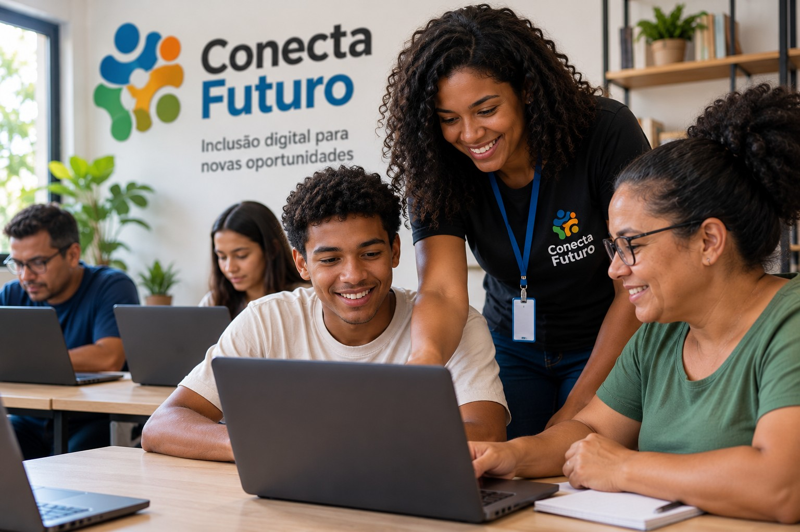

Primeiro Código
Introdução à programação, HTML e CSS para adolescentes interessados em dar os primeiros passos na tecnologia.
Conecta Futuro
A Conecta Futuro é uma organização sem fins lucrativos dedicada à inclusão digital e à capacitação tecnológica de jovens, adultos e idosos de comunidades de baixa renda.
Nossa missão é ampliar o acesso à tecnologia e desenvolver habilidades digitais que contribuam para a educação, autonomia e inserção no mercado de trabalho.
Por meio de projetos sociais e oficinas gratuitas, aproximamos pessoas da tecnologia e criamos oportunidades de aprendizagem e desenvolvimento profissional.

Introdução à programação, HTML e CSS para adolescentes interessados em dar os primeiros passos na tecnologia.
Inclusão digital para pessoas idosas, com orientação sobre celulares, internet, serviços digitais e segurança on-line.
Capacitação tecnológica para adultos em busca de oportunidades de trabalho e desenvolvimento profissional.
Você pode contribuir participando como voluntário ou apoiando nossas iniciativas sociais.
E-mail: contato@conectafuturo.org.br
Telefone: (71) 3333-2026
Salvador — Bahia